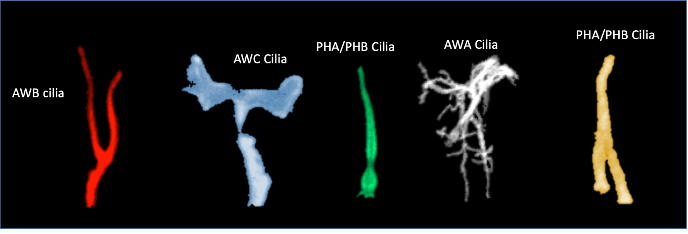

Welcome to Kaplan's Lab
Welcome to Our Lab
Our lab is dedicated to uncovering the genetic and molecular mechanisms driving rare diseases, with a particular focus on ciliopathies. By integrating comparative genomics, functional assays, and cutting-edge gene editing technologies, we aim to bridge the gap between genotype and phenotype, advancing our understanding of disease mechanisms and identifying potential therapeutic targets.
Research Updates
Pir MS, Cevik S, Kaplan OI. CilioGenics: an integrated method and database for predicting novel ciliary genes. Nucleic Acids Res. 2024 Aug 12;52(14):8127-8145. doi: https://doi.org/10.1093/nar/gkae554
Pir MS, Cevik S, Kaplan OI. ConVarT: a search engine for matching human genetic variants with variants from non-human species. Nucleic Acids Res. 2022 Jan 7;50(D1):D1172-D1178. doi: https://doi.org/10.1093/nar/gkab939
Turan MG, Kantarci H, Cevik S, Kaplan OI. ARL13B regulates juxtaposed cilia-cilia elongation in BBSome dependent manner in Caenorhabditis elegans. iScience. 2025 Jan 10;28(2):111791. doi: https://doi.org/10.1016/j.isci.2025.111791

Team Members
Oktay I. Kaplan, Dr.
Principal Investigator
Sebiha Cevik, Dr.
Principal Investigator
Ferhan Yenisert
PhD Student
Damal Puçak
Graduate Student
Sinem Güzel
Graduate Student
Fatma Güzel
Graduate Student
Zanyar Demir
Graduate Student